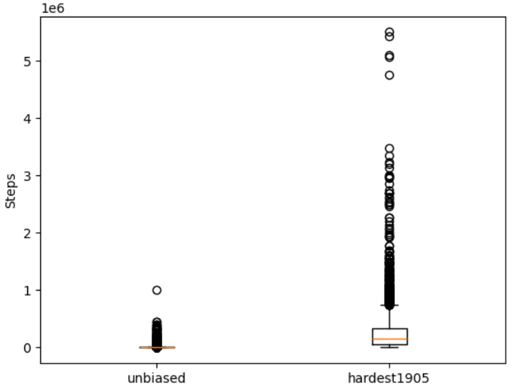
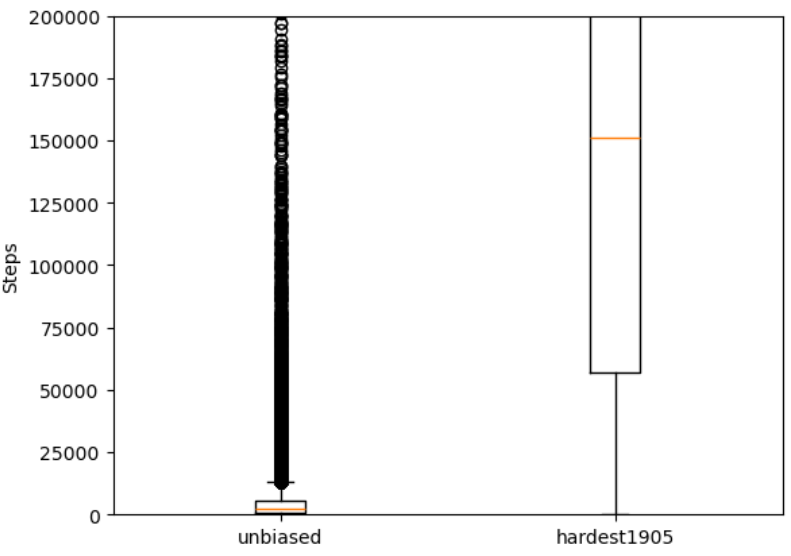

To ensure that my backtracking algorithm works, I tested it on a subset of puzzles (size = 2980) from forum_hardest_1905_11+, a list of extremely hard puzzles maintained by members of the Enjoy Sudoku Players Forum, having a Sudoku Explainer difficulty rating above 11.0. All puzzles were solvable by my solver.
To compare speeds, I added a counter to count the number of recursive steps my program took for each puzzle. I also tested it against a subset (size = 42417) of unbiased, a dataset sampled with uniform probability from the set of all minimal Sudoku puzzles. This dataset can be said to be more representative of the average Sudoku puzzle.
Using matplotlib.pyplot I was able to generate the following boxplot. Comparing the set of puzzles from the unbiased dataset to the hardest dataset,
There's quite a big difference between the number of steps an average sudoku would take my solver to solve, compared to one of the 'hard' ones! We can observe significant right-skewness for both datasets.
Zooming in,
Here are some statistics of the datasets:
| Statistic | Unbiased | Hard |
|---|---|---|
| 0th percentile | 57.0 | 77.0 |
| 25th percentile | 773.0 | 56756.0 |
| 50th percentile | 2108.0 | 150899.0 |
| 75th percentile | 5647.5 | 331841.25 |
| 100th percentile | 1004620.0 | 5492954.0 |
| Standard deviation | 15601.56 | 421085.83 |
It's safe to say that a large majority of 'normal' sudoku puzzles would be solved within a reasonable time frame by my solver. This is important, as Vercel only allows for 10 seconds before it returns a SET_TIMEOUT_ERROR. It's something to take note when choosing a hosting platform: perhaps in my next project, I will look into PaaS (platform-as-a-service) such as Heroku or Render with longer execution times.
The datasets, together with the number of steps my solver took, can be found here. The jupyter notebook that I used to crunch the data is also provided.
Some updates:
A Sudoku Solver can't be that hard, right?
Wrong.
First, I knew I needed to get the back-end working. I began to think about how to implement it - how would I, as a human player, solve a given Sudoku? If the grid is already fully filled - solved. Otherwise, I would first look out for the row/column/3x3 grid with the most filled numbers, and make a guess, then proceed from there. If I encounter a collision (clash with other numbers) later on, I would delete my previous number and try again.
Turns out this is a pretty well known algorithm for solving puzzles - (depth first search) backtracking! And so I wrote a few lines of pseudocode on some scrap paper, and speedily wrote some python code to realise the algorithm. Implementing the sudoku grid as a 9x9 numpy array, I tested my code with some sample inputs, and after a few rounds of testing, we were done with the back-end.
The hard part was over... or so I thought!
Next was implementing the front-end. I used input boxes to represent each cell in the grid, and changed some of it's aesthetics to better capture a typical Sudoku 9x9 grid with it's 3x3 subgrids accentuated with a border feature. I implemented buttons that submitted the grid to the backend, solves the user-given Sudoku, and returns it back to the user. However, I was still left quite dissatisfied.
Firstly, it was quite easy for a user to input an invalid grid - grids where there are colliding numbers which do not follow the rules of Sudoku, or even invalid symbols. To prevent this, I had to secure the grid from both client-side and server-side. (There could always be an errant user who likes their browser devtools) On the server side, if the grid was invalid, I had to flash a message back to the user. On the client side, however, things got a lot more tricky. I had wanted to notify the user whenever they inputted a colliding number. Because I did not want to store the current grid client-side (exposing it to vulnerability), I decided to attach an event listener for every input, feed the input back to the server, and depending on the response, flag the invalid number out to the user through the colour red. This meant that I had to constantly update a grid on the back-end through http-requests, and check for collisions, and send the result back client-side.
I thought I had finished my solver, and so I thought that having another tab for users to have the option to just Play Sudoku was trivial, so I added that function in. Generate a valid (and solvable) sudoku randomly, have the user attempt it, and let them check the solution after they're done. Similarly, I had to secure both client-side and server-side. Unfortunately at this point I had discovered that < input type="number" > actually accepts the input 'e' for some reason, so further sanitizing was necessary. Also, when the solution was presented, it was not clear which numbers were part of the original puzzle, which were the user's inputs, and which were the values left unfilled. So I had to pass three 9x9 arrays around. (Conditional styling with Jinja is... interesting)
Just when I thought I had perfected it, I had someone else try the game and give me feedback. (Of course, many hours of debugging commenced. Always trust users to find weird edge cases.) They also proposed useful QOL improvements, which I had never thought of. Being able to use WASD controls to manipulate the cursor, the num scroll looping back to 1 after 9, and the 'Clear All' button originated at this stage.
After a few final polishes, here is v1.0. Looks rudimentary, I know, but I now have a newfound appreciation for how hard it must be to implement games - there's so much hidden logic that users' don't know that happens behind the scenes, and that every single small feature has had whole days poured into it testing and fixing bugs. Small things like the 'Solve' button being disabled when an invalid input is detected to having which numbers be bold, be red, be green or be black shall not be taken for granted.
Nevertheless, this has been an immensely fruitful learning experience. Here's to more fun projects in future, and thanks for reading :)
(p.s. I really felt building the back-end was far more enjoyable that front-end.)
--Alson, 2024